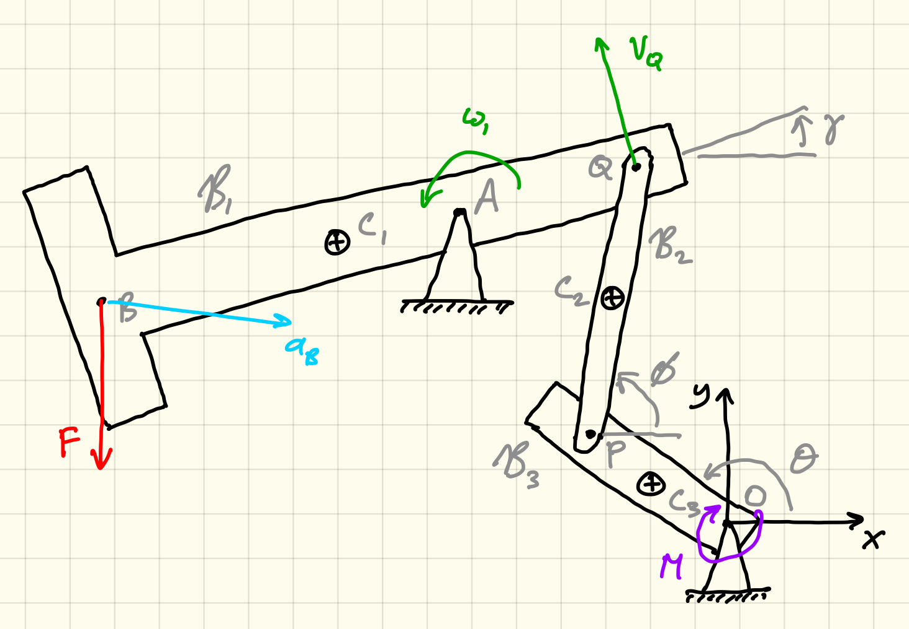

Notation
Mathematical objects
| Example | Meaning | LaTeX |
|---|---|---|
| $P$ | Points and positions are denoted by capital italic letters. | \$P\$ |
| $(4, 5, -2)$ | Coordinates of a position are given as a tuple, so $P$ is at $(4, 5, -2)$ is the same as saying that $P$ has coordinates $x = 4$, $y = 5$, $z = -2$. Note the distinction from vector components with square brackets. | \$(4, 5, -2)\$ |
| $\boldsymbol{v}$ | Vectors in typeset material are in bold font. | \$\boldsymbol{v}\$ |
| $\vec{v}$ | Vectors in handwriting use an over-arrow. | \$\vec{v}\$ |
| $\|\boldsymbol{v}\|$, $v$ | Magnitude uses double-bars or a plain letter, so $v = \|\boldsymbol{v}\| = \sqrt{v_x^2 + v_y^2 + v_z^2}$. | \$\|\boldsymbol{v}\|\$, \$v\$ |
| $\hat{\boldsymbol{v}}$ | Unit vectors use over-hat, so $\hat{\boldsymbol{v}} = \frac{\boldsymbol{v}}{\|\boldsymbol{v}\|}$. | \$\hat{\boldsymbol{v}}\$ |
| $\hat{\boldsymbol{\imath}}$, $\hat{\boldsymbol{\jmath}}$, $\hat{\boldsymbol{k}}$ | Cartesian basis vectors, so we write $\boldsymbol{v} = 3\hat{\boldsymbol{\imath}} + \hat{\boldsymbol{\jmath}} + 7\hat{\boldsymbol{k}}$. | \$\hat{\boldsymbol{\imath}}\$, \$\hat{\boldsymbol{\jmath}}\$, \$\hat{\boldsymbol{k}}\$ |
| $[3, 1, 7]$ | Vector components use square brackets, so we write $[\boldsymbol{v}]_R = [3, 1, 7] = 3\hat{\boldsymbol{\imath}} + \hat{\boldsymbol{\jmath}} + 7\hat{\boldsymbol{k}}$. If the basis is clear then we will write $\boldsymbol{v} = [3, 1, 7]$. | \$[3, 1, 7]\$ |
| $[\boldsymbol{v}]_R$ | Vector components in basis $R$. Standard basis names are $R$ for Rectangular (Cartesian), $P$ for polar, $C$ for cylindrical, $S$ for spherical. | \$[\boldsymbol{v}]_R\$ |
| $v_x, v_y, v_z$ | Vector components are in non-bold with subscripts, so $\boldsymbol{v} = [v_x, v_y, v_z] = v_x\,\hat{\boldsymbol{\imath}} + v_y\,\hat{\boldsymbol{\jmath}} + v_z\,\hat{\boldsymbol{k}}$. | \$v_x, v_y, v_z\$ |
| $v$ versus $v_x$ | Magnitude (positive) is the plain letter $v$, while signed component is $v_x$. | \$v\$ versus \$v_x\$ |
| $\hat{\boldsymbol{e}}_r, \hat{\boldsymbol{e}}_\theta$ | Polar basis vectors. Maybe we should change this to $\hat{\boldsymbol{r}}, \hat{\boldsymbol\theta}$? | \$\hat{e}_r\$, \$\hat{e}_\theta\$ |
| $\boldsymbol{r}$, $\boldsymbol{r}_P$, $\boldsymbol{r}_{OP}$, $\overrightarrow{OP}$ | Position vector of point $P$ from origin $O$. The origin and/or point can be neglected if it is obvious from context. | \$\boldsymbol{r}\$, \$\boldsymbol{r}_P\$, \$\boldsymbol{r}_{OP}\$, \$\overrightarrow{OP}\$ |
| $\boldsymbol{\rm A}$ | Matrices are in upright (roman) bold. | \$\boldsymbol{\rm A}\$ |
| $A_{ij}$ | Matrix components are in italic non-bold font. | \$A_{ij}\$ |
| $4\rm\ kg/m^2$, $4\rm\ kg\,m^{-2}$ | Units are in roman (upright) font, have a space between the number and units, and have a thin-space between unit symbols. | \$4\rm\ kg/m^2\$, \$4\rm\ kg\,m^{-2}\$ |
| $x = 4t^2$ | To make formulas dimensionally correct we use one of the following forms: (1) “$x = 4t^2$, where $t$ is in seconds and $x$ is in meters”, (2) “$x = a t^2$ where $a = 4\rm\ m/s^2$”, or (3) “$x = 4 (t/{\rm s})^2\rm\ m$” (using quantity calculus). | \$x = 4t^2\$ |
Diagram elements
| Element | Meaning | LaTeX |
|---|---|---|
| $\mathcal{B}_1$ | Body number 1. Use numbers 1,2,3 for bodies. | \$\mathcal{B}_1\$ |
| $m_1, \omega_1, \alpha_1$ | Mass, angular velocity, and angular acceleration of body $\mathcal{B}_1$. Use subscript numbers for quantities associated with bodies. | \$m_1, \omega_1, \alpha_1\$ |
| $P, Q$ | Points $P$ and $Q$. Use italic capital letters for points. | \$P, Q\$ |
| $\boldsymbol{r}_P, \boldsymbol{v}_P, \boldsymbol{a}_P$ | Position, velocity, and acceleration vectors of point $P$. Use subscript capital italic letters for quantities associated with points. | \$\boldsymbol{r}_P, \boldsymbol{v}_P, \boldsymbol{a}_P\$ |
| $I_{1,P,z}$ | Moment of inertia of body $\mathcal{B}_1$ about point $P$ around the $z$ axis. Any of the subscripts can be neglected if they are obvious from context, although at least the point should normally be included. | \$I_{1,P,z}\$ |
Color scheme for diagrams
When possible, use a pale yellow (or tan) background with a light gray (or light green) square grid, like traditional engineering paper. A blank white background can also be used.
| Color | Meaning |
|---|---|
| Black | Coordinate axes and objects. |
| Gray | Measurements, angles, other notes. |
| Blue | Position vectors. |
| Green | Velocities and angular velocities. |
| Cyan | Accelerations and angular accelerations. |
| Red | Forces. |
| Purple | Moments. |

Example diagram showing colored elements.